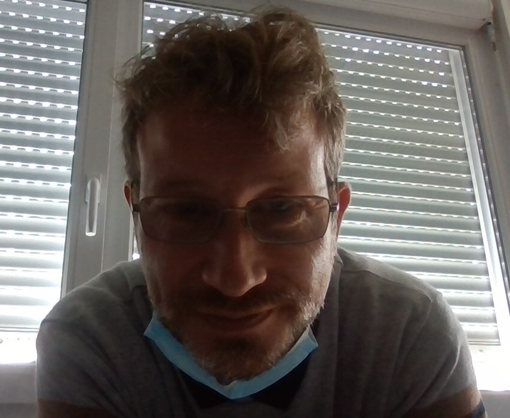
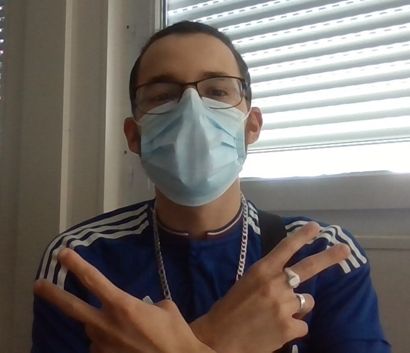

Je m’appelle Iliess Mazouari j’ai 19 ans, j’aime particulièrement voyager découvrir le monde les différente culture, le foot, les films et les séries.Après ma 3ème j'ai commencer par une formation de préparation et réalisation d’ouvrage électrique au lycée Joseph Fourier à Auxerre que j’ai arrête au bout de 1 ans, j’ai ensuite suivi le Dispositif en Amont de la Qualification au Greta de Sens où on suivi une remise à niveau en math, français, un peu d'anglais et en informatique et des ateliers comportementaux ou nous faisons notamment des cours. Dans la formation (DAQ 2.0) j’ai suivi le bootcamp "get into tech" en ligne pour découvrir les différents métiers du numérique, durant ce bootcamp nous avons eu différentes missions, nous avons pu découvrir différents métiers tel que développement web, HTML-CSS, Designer web, Marketing-digital etc. Je suis actuellement entrain de passe un titre professionnel designer web, par la suite je souhaite me former dans le développement web.
Je suis Pascal Pagenelle, 42 ans, j'ai une fille de 8 ans, je demeure à Champigny sur Yonne. Mes passes temps sont la musique, le cinéma, les sorties et soirées entre amis et les jeux vidéos. J'ai arrèté l'école en seconde, car le système scolaire ne me convenait pas, j'ai pris une année sabbatique, je me suis engagé dans l'armée pendant deux ans. Au sortir de l'armée j'ai passé un CAP / BEP mécanique poids lours ainsi que mon permis transport en commun et j'ai travaillé sept ans à la RATP. Suite à une ancienne blessure j'ai dûs faire une reconversion, j'ai passé un titre niveau bac professionnel en assistance informatique, j'ai travaillé plusieurs année de ce domaine, voulant avoir un niveau supérieur j'ai passé un titre niveau bts en assistance informatique. Suite à la formation de Designer Web que j'effectue actuellement, je souhaite trouver un poste au sein d'une entreprise.
Je me présente je m'apelle Mehdi Raposo, j'ai 21 ans, j'habite à Sens depuis août 2019. Dans le vie j'aime beaucoup les films et séries policiaires, sciences fictions et d'action, je suis né avec un ordinateur et une console en main c'est donc des domaines que j'aime énormement. J'aime aussi beaucoup le sport comme le football, le basket ball et les sports de combats. Durant ma scolarité, je n'est pas été très investi, j'ai donc arreté mes études à 15 ans puis j'ai eux quelques petites experiences professionnel notamement dans les domaines de la vente que je n'ai pas beaucoup apprécié, la restaurant que j'ai beaucoup aimé mais les horaires ne me convenaient pas, et le domaine de l'informatique que j'ai énormement aimé. Suite à celà j'ai suivi un dispositif au Greta de Sens afin d'élaborer mon projet de développeur/Designer Web. J'ai ensuite intégré un titre professionnel Designer Web, pour par la suite intégré une formation en développement Unity.